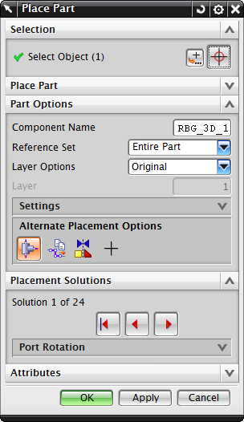

放置部件对话框
一旦您在指定项对话框中选择了一个部件并点击确定后，就会打开放置部件对话框，以便您将部件放置到管线装配中并进行定位和定向。

选择对象
使用选择对象来在管线中放置部件，您可以直接在管线或管线段控制点上放置部件，使用点对话框来指定其它类型的部件放置。
部件选项
在部件选项下方，您可以定义部件的：
备选放置选项中提供了各种移动和旋转部件的方法。
放置解算方案
当部件刚刚被放置到管线中时，它将把它的端口与您选择的管线对象对齐，如果有多种可能的放置方案，您可以通过返回第一个解算方案、上一个解算方案以及下一个解算方案按钮来在各个方案中循环切换。
在图形窗口中点击鼠标左键与点击下一个解算方案所产生的效果是一样的。